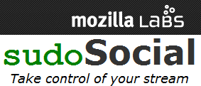

Suite à mon article sur les alternatives de Facebook, je vais vous présenter sudoSocial.me.
sudoSocial.me est un nouveau projet de chez
Mozilla Labs (les laboratoires de Mozilla d'où sont issus des projets tels que
Firefox Sync). Le but de ce projet est de réunir vos différents flux (Twitter, Flickr etc. ) pour en faire un flux unique que chacun peut consulter et commenter. L'intérêt de ce service est qu'il est entièrement personnalisable (CSS et Javascript), et
Open Source ! Il est même possible d'exporter son profil grâce à un tag JavaScript. Pour le moment l'inscription et la connexion se fait via un login
OpenID ce qui est une très bonne initiative ;)
Une fois votre compte créé vous pouvez facilement ajouter vos différents flux RSS/Atom, il est même possible de cacher des entrées manuellement provenant des flux.
Comme indiqué précédemment, il est facile de personnaliser son profil, voici un
profil basique (sans modification) et voici
le mien (avec une feuille CSS différente).
Pour le moment le site est encore en anglais et propose peu d'option quant à l'affichage des flux, cependant je pense que le fait de proposer ce projet chez Mozilla va accélérer le développement de cet outil :)
Encore une fois ce projet rentre dans l'optique de Mozilla, de faire un web ouvert, accessible et libre à tous.
Source : Mozilla Labs
Commentaires 0
Aucun commentaire.